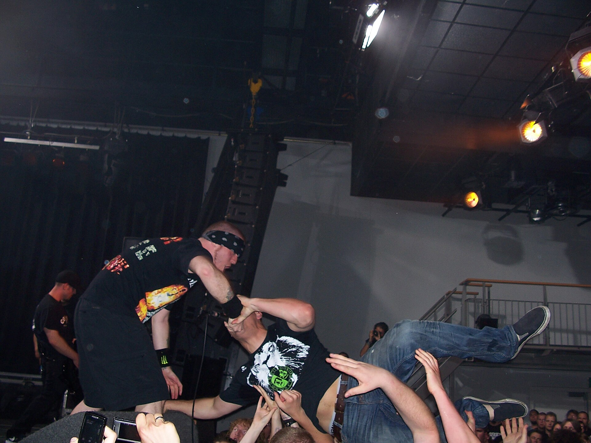

Commands.
Every slash command Keking answers to. Type one in any channel the bot can read.

Music
/play
DoesPlay a track from a search query or URL.
Use/play yorushika spring thief
/search
DoesSearch and pick from several results.
Use/search kaibutsu
/queue
DoesShow what is playing and what is next.
Use/queue
/now
DoesShow the current track.
Use/now
/skip
DoesSkip to the next track.
Use/skip
/pause
DoesPause playback.
Use/pause
/resume
DoesResume playback.
Use/resume
/stop
DoesStop playback and clear the queue.
Use/stop
/leave
DoesDisconnect the bot from voice.
Use/leave
/loop
DoesLoop the track or the queue.
Use/loop
/shuffle
DoesShuffle the queue.
Use/shuffle
/remove
DoesRemove a track from the queue.
Use/remove 3
/clear
DoesClear the whole queue.
Use/clear

Lyrics
/lyrics
DoesShow lyrics for the current track, or search by name.
Use/lyrics spring thief
Text-to-Speech
/tts
DoesSpeak text aloud in your voice channel.
Use/tts good morning everyone
Discovery
/pia
DoesSearch NovelPia novels.
Use/pia regression
Admin
/social-preview
DoesTurn link-preview cards on or off, per server, domain, or channel. Needs Manage Server.
Use/social-preview enabled:False domain:Facebook
/botstats
DoesShow bot health and uptime.
Use/botstats
/guildinfo
DoesShow info about this server.
Use/guildinfo
Utility
/help
DoesList commands.
Use/help
/ping
DoesCheck the bot's latency.
Use/ping
/server
DoesShow basic server info.
Use/server